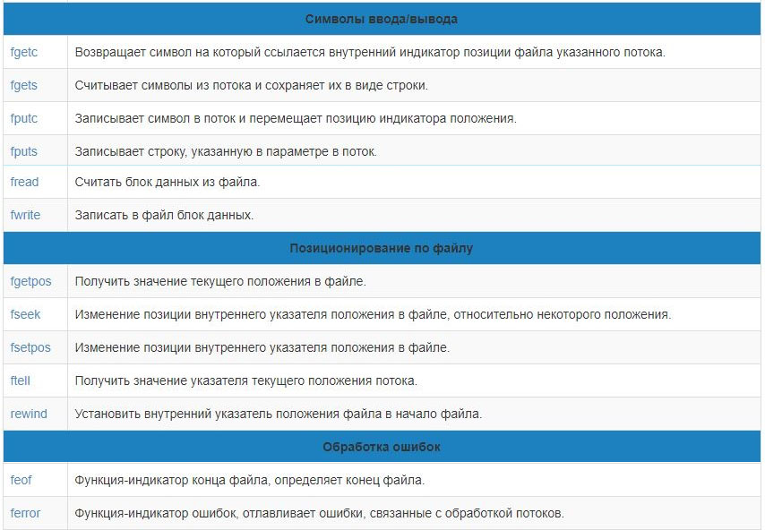

Основы алгоритмизации и программирования
Работа с файлами
Edward & Albert / github:Tgjmjgj
Содержание лекции
Файловый ввод/вывод
Файловый ввод/вывод, как и консольный, бывает двух видов:
- Функциональный ввод/вывод (из C)
- Потоковый ввод/вывод (C++)
Файл - что за фрукт
Файл - это именованный объект, хранящий данные (программа или любая другая информация) на каком-либо носителе (винчестер, CD). Файл, как и массив, - это совокупность данных, потому они немного похожи.
Отличия файла от массива
- Файлы хранятся не в оперативной памяти, а на внутреннем или внешнем носителе (как правило)
- Файл не имеет фиксированной длины, т.е. может увеличиваться и уменьшаться сколько угодно
- Перед работой с файлом его необходимо открыть, а в конце - закрыть
Тексторые и бинарные файлы
Грубо говоря, файлы можно разделить на две категории:
- Текстовые файлы могут быть просмотрены и отредактированы с клавиатуры любым текстовым редакторов и имеют простую структуру: последовательность ASCII-символов.
- Бинарные файлы – это файлы, которые не имеют структуры текстовых файлов и хранят последовательность бит. Каждая программа для своих бинарных файлов определяет собственную структуру, т.е. чтение таких файлов может оказаться весьма затруднительным.
Файлы в C
Все файлы в С рассматриваются как неструктурированная последовательность байтов. Каждый файл завершается маркером конца файла (end-of-file, EOF).
Когда файл открывается, то создается программный объект и с этим объектом связывается поток. Поток – это файл вместе с предоставленными средствами буферизации. Потоки можно открывать и закрывать (связывать указатели на поток с конкретными файлами); вводить и выводить строку, символ, форматированные данные, порцию данных произвольной длины; анализировать ошибки ввода/вывода и достижения конца файла; управлять буферизацией потока и размером буфера; получать и устанавливать указатель текущей позиции в файле.
Файловый ввод/вывод С
Функции файлового ввода/вывода С содержатся в той же библиотеке, где и функции для консольного ввода/вывода - stdio.h
Функции для работы с файлами

Функции для работы с файлами 2
Начало работы с файлом
Прежде чем начать работать с файлом, надо инициировать (открыть) поток. При этом поток связывается со структурой предопределенного типа FILE, который описан в библиотечном файле <stdio.h>. Объект этой структуры часто называют дескриптором файла.
В конце работы с файлом, тот же поток необходимо будет закрыть.
Открытие файла
Для открытия файла используется функция fopen.
FILE* fopen(char* filename, char* mode);
При успешном открытии возвращает указатель на структуру типа FILE - указатель на файл. Эта структура связана с физическим файлом и используется для всех последующих операций над этим файлом.
Имя файла
Первый параметр функции fopen - filename служит для передачи имени файла, например "D:\\Work\gifts\shared\нажми_меня.bat".
Замечание!
Поскольку символ обратного слеша \ в языках C/C++ используется для описания спец.символов ('\0','\n','\r'), для записи конкретно обратного слеша используется конструкция из двух знаков: \\. Это нужно учитывать при написании пути к файлу.
Режимы открытия файла
| Режим | Описание |
| "w" | Открыть файл для записи, если файл существует, то он стирается |
| "r" | Открыть файл для чтения |
| "a" | Открыть файл для добавления в конец, если файла нет, то он создается |
| "w+" | Открыть файл для записи, чтения, исправления. Если файл существует, он стирается |
| "r+" | Открыть файл для чтения и исправления, однако нельзя увеличивать размер файла |
| "a+" | Открыть файл для добавления. Как режим "w+", только существующий файл не стирается |
| "t" | Файл открывается в текстовом режиме (по умолчанию) |
| "b" | Файл открывается в бинарном режиме |
- Режимы с "w" - создается пустой новый файл. Старый удаляется.
- Режимы с "r" - индикатор позиции на начало файла, если файл не существует - неудача.
- Режимы с "a" - индикатор позиции на конец файла, если файл не сущестует - создается новый.
Пример открытия файла
FILE* f;
f = fopen("D:\\programs\explos\init.txt", "tr+");
FILE *fl = fopen("C:\\pagefile.sys", "bw");
Закрытие файла
После работы с файлом он должен быть закрыт. Для закрытия файла используется функция fclose
int fclose(FILE* file);
Функции fclose передается дескриптор файла, который необходимо закрыть.
Если файл не был закрыт в программном коде, система автоматически закроет его при заверщении работы программы.
Закрытие всех файлов
Для закрытия всех ранее открытых файлов используется функция fcloseall
int fcloseall(void);
При успешном завершении возвращает количество закрытых потоков.
Пример обращения к файлу
FILE *fp;
if ((fp = fopen("file.txt", "w")) == NULL)
{
perror("\nОшибка при открытии файла"); // Выведет сообщение об ошибке
exit(0);
}
...
fclose(fp);
Функция перенаправления потока
Если требуется изменить режим доступа к файлу, то для этого сначала необходимо закрыть данный файл, а затем вновь его открыть, но с другими правами доступа. Для этого уже существует стандартная функция:
FILE* freopen(char* filename, char* mode, FILE* handle);
Эта функция сначала закрывает файл, связанный с дескриптором handle, а затем открывает файл с именем файла filename и правами доступа mode.
Индикатор конца файла
Структура FILE содержит индикатор конца файла, который имеет значение 0, пока конец файла не достигнут. Индикатор конца файла перепроверяется после каждой операции чтения.
Состояние конца файла можно получить используя функцию feof.
int feof(FILE *f);
Эта функция возвращает ненулевое значение, если индикатор конца файла установлен, в противном случае возвращается 0.
Чтение/запись из файла
Операции по чтению/записи данных из файла можно разделить на три группы:
- Посимвольный ввод/вывод
- Построчный ввод/вывод
- Блочный ввод/вывод